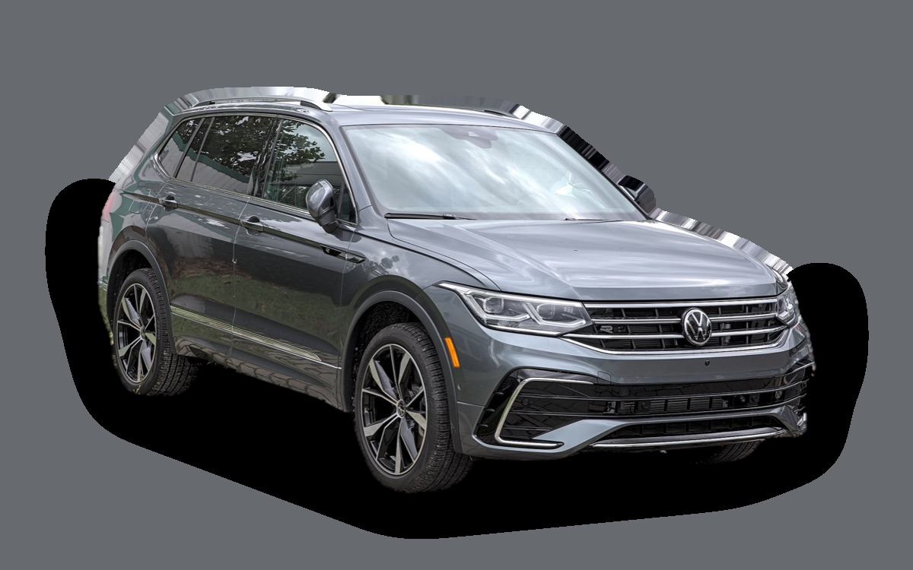

Vad kostar en Volkswagen Tiguan II per månad?
En Volkswagen Tiguan II från 2020 kostar cirka 3 682 kr i månaden, allt inräknat.
3 682 krper månad, årsmodell 2020
216 000 krpris, årsmodell 2020
323 900 krsenaste nypris
Aprisvärdhetsbetyg (2020)


Månadskostnad per årsmodell
| Årsmodell | Version i beräkningen | Pris | Per månad | Betyg |
|---|---|---|---|---|
| 2023 | 1.5 TSI 150 DSG, Life | 212 000 kr | 3 714 kr | B |
| 2020 | 1.5 TSI 150 DSG, Life | 216 000 kr | 3 682 kr | A |
| 2017 | 1.5 TSI 150 DSG, Life | 167 000 kr | 3 417 kr | B |
Räknat på 5 års ägande och 1 250 mil per år, med bränslepriser från 2026-10-22. Månadskostnaden innehåller värdeminskning, drivmedel, service och reparationer, försäkring och fordonsskatt.
Så fördelas kostnaden för en 2020:a
- Värdeminskning: 1 091 kr/mån
- Drivmedel: 1 422 kr/mån
- Service och reparationer: 697 kr/mån
- Försäkring: 365 kr/mån
- Fordonsskatt: 107 kr/mån
Begagnatpriser i annonser
| Årsmodell | Medianpris | Annonser | Typiskt miltal |
|---|---|---|---|
| 2023 | 309 000 kr | 41 | 7 400 mil |
| 2022 | 279 800 kr | 44 | 9 000 mil |
| 2021 | 264 900 kr | 59 | 10 300 mil |
| 2020 | 249 800 kr | 101 | 11 200 mil |
| 2019 | 189 900 kr | 14 | 12 700 mil |
| 2018 | 199 700 kr | 50 | 13 200 mil |
| 2017 | 204 900 kr | 16 | 13 700 mil |
| 2016 | 99 000 kr | 5 | 16 400 mil |
Medianpriset i svenska annonser per årsmodell i oktober 2026 (källa: Blocket, BilKoll). Annonspriser är utgångspriser, och slutpriset kan bli lägre.
Motorer och versioner
| Motor | Drivmedel | Effekt | 0–100 km/h | Förbrukning (WLTP) | Räckvidd | Årsmodeller | Pristillägg |
|---|---|---|---|---|---|---|---|
| 1.5 TSI 150 DSG | Bensin | 150 hk | 9,2 s | 6,6 l/100 km | – | 2016–2023 | – |
| 2.0 TDI 150 4MOTION DSG | Diesel | 150 hk | 9,3 s | 5,6 l/100 km | – | 2016–2023 | +56 000 kr |
| eHybrid 245 | Laddhybrid | 245 hk | 7,5 s | 2 l/100 km + 15 kWh/100 km | – | 2021–2023 | +187 000 kr |
- Utrustning: Life, R-Line (+35 000 kr)
Fakta
- Kaross
- SUV
- Årsmodeller
- 2016–2023
- Senaste nypris
- 323 900 kr
- Bagage
- 615 liter
- Euro NCAP
- 5 av 5 stjärnor
- Nybilsgaranti
- 3 år
- Driftsäkerhet
- 4 av 5
- Helförsäkring, uppskattning
- 6 300 kr/år
- Service, uppskattning
- 4 300 kr/år
Vanliga fel att ha koll på
- DSG-låda DQ200 (mekatronik, koppling), reparation cirka 20 000 kr
- Vattenpump och termostathus i plast läcker, reparation cirka 6 500 kr
- EGR och partikelfilter (TDI), reparation cirka 9 000 kr
- Haldex-pump (fyrhjulsdrift), reparation cirka 7 000 kr
Felen gäller vissa motorer och årsmodeller. I kalkylatorn räknas risken för just den version du väljer.
Fördelar och nackdelar
Fördel
En av Sveriges vanligaste SUV:ar, rymlig och lätt att sälja vidare.
Nackdel
Tillverkas inte längre i den här generationen.
Liknande bilar
 Mercedes-Benz EQA3 653 kr/mån som 2023:a
Mercedes-Benz EQA3 653 kr/mån som 2023:a Seat Ateca3 718 kr/mån som 2020:a
Seat Ateca3 718 kr/mån som 2020:a Volkswagen T-Roc3 611 kr/mån som 2023:a
Volkswagen T-Roc3 611 kr/mån som 2023:a Kia EV63 597 kr/mån som 2023:a
Kia EV63 597 kr/mån som 2023:a Lexus NX3 772 kr/mån som 2023:a
Lexus NX3 772 kr/mån som 2023:a Hyundai Kona3 583 kr/mån som 2023:a
Hyundai Kona3 583 kr/mån som 2023:a
Uppdaterad 2026-10-27 · annonsdata okt 2026